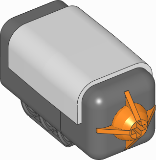
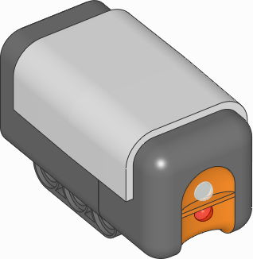
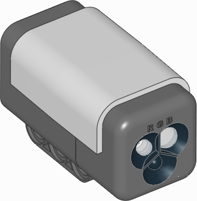
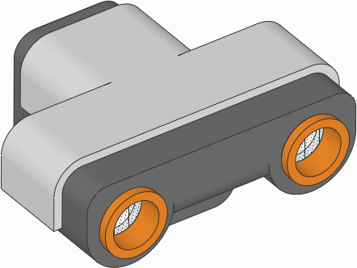
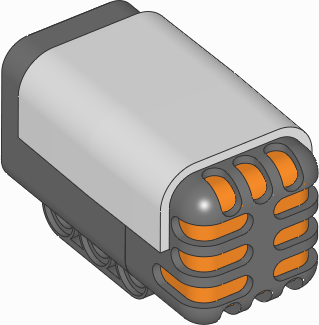
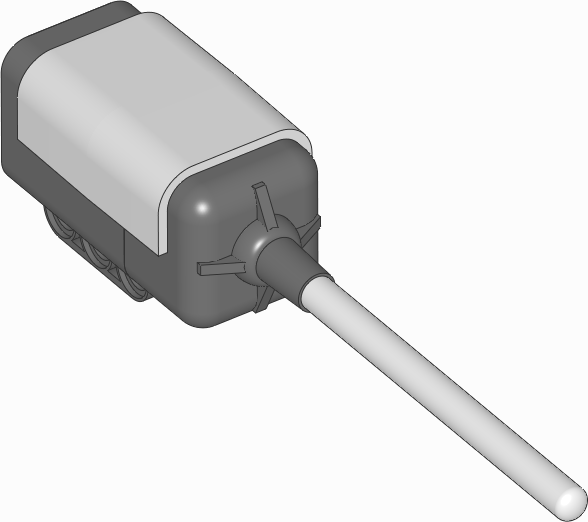
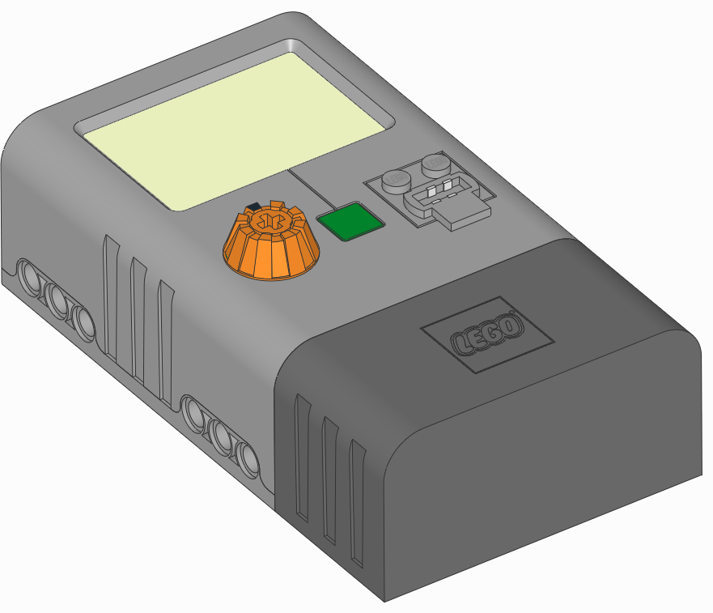

nxtdevices – NXTデバイス¶
LEGO® MINDSTORMS® NXT のモーターとセンサーを EV3 ブロックで使用します。
NXTタッチセンサー¶

NXT光センサー¶

NXTカラーセンサー¶

-
class
ColorSensor(port)¶ LEGO® MINDSTORMS® NXT Color Sensor.
パラメータ: port (Port) – センサーを接続するポート。 -
color()¶ 表面の色を測定します。
戻り値: Color.BLACK,Color.BLUE,Color.GREEN,Color.YELLOW,Color.RED,Color.WHITEまたはNone。戻り値の型: Color。色が検出されない場合はNone。
-
rgb()¶ 赤・緑・青の順に光を当てて、表面の反射率を測定します。
戻り値: 赤・緑・青それぞれの光に対する反射率のタプル。各値は0.0(反射なし)から100.0(高い反射)の範囲。 戻り値の型: (割合: %, 割合: %, 割合: %)
内蔵ライト
このセンサーには内蔵ライトがあります。赤・緑・青に点灯させるか、消灯できます。
-
light.off()¶ ライトを消します。
-
NXT超音波センサー¶

NXTサウンドセンサー¶

NXT温度センサー¶

NXTエネルギーメーター¶

-
class
EnergyMeter(port)¶ LEGO® MINDSTORMS® Education NXT エネルギーメーター。
パラメータ: port (Port) – センサーを接続するポート。
Vernierアダプター¶
-
class
VernierAdapter(port, conversion=None)¶ LEGO® MINDSTORMS® Education NXT/EV3 Vernierセンサー用アダプター。
パラメータ: - port (Port) – センサーを接続するポート。
- conversion (callable) –
conversion()形式の関数。この関数は生のアナログ電圧をセンサー固有の出力値に変換するために使われます。各 Vernier センサーには独自の変換関数があります。下記の例は Surface Temperature Sensor の変換を示しています。
-
conversion(voltage)¶ 生の電圧(mV)をセンサー値に変換します。
前もって
conversion関数を指定していない場合、変換は適用されません。パラメータ: voltage (電圧: mV) – アナログセンサーの電圧。 戻り値: 変換されたセンサー値。 戻り値の型: float
-
value()¶ センサーの
voltage()を測定し、指定したconversion()を適用してセンサー値を返します。戻り値: 変換されたセンサー値。 戻り値の型: float
例を表示/非表示
例: Surface Temperature Sensor を使います。
#!/usr/bin/env pybricks-micropython
from pybricks.parameters import Port
from pybricks.nxtdevices import VernierAdapter
from math import log
# Surface Temperature Sensor の変換式
def convert_raw_to_temperature(voltage):
# 生の電圧を NTC 抵抗値に変換します。
# Vernier Adapter EV3 ブロックに従います。
counts = voltage/5000*4096
ntc = 15000*(counts)/(4130-counts)
# log(0) を安全に処理: ntc の値が正になるようにします。
if ntc <= 0:
ntc = 1
# センサーのドキュメントにある Steinhart-Hart の式を適用します。
K0 = 1.02119e-3
K1 = 2.22468e-4
K2 = 1.33342e-7
return 1/(K0 + K1*log(ntc) + K2*log(ntc)**3)
# ポート1でアダプターを初期化
thermometer = VernierAdapter(Port.S1, convert_raw_to_temperature)
# 測定値を取得して表示
temp = thermometer.value()
print(temp)